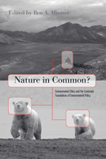

A groundbreaking contribution to a central debate in environmentalism
A groundbreaking contribution to a central debate in environmentalism


 A groundbreaking contribution to a central debate in environmentalism
A groundbreaking contribution to a central debate in environmentalism

|  |
Nature in Common?Environmental Ethics and the Contested Foundations of Environmental Policyedited by Ben A. Minteerpaper EAN: 978-1-59213-704-6 (ISBN: 1-59213-704-0) |
"Nature in Common? brings together leading environmental philosophers to sharpen and clarify the divisions and critically examine the strengths and limits of moving environmentalists toward an agenda with which most can agree. This is an important and unique collection of essays [and] deserves to be read widely."
—Jan Dizard, Charles Hamilton Houston Professor of American Culture and the Pick Professor of Environmental Studies, Amherst College
This important book brings together leading environmental thinkers to debate a central conflict within environmental philosophy: Should we appreciate nature mainly for its ability to advance our interests or should we respect it as having a good of its own, apart from any contribution to human well being? Specifically, the fourteen essays collected here discuss the "convergence hypothesis" put forth by Bryan Norton—a controversial thesis in environmental ethics about the policy implications of moral arguments for environmental protection. Historically influential essays are joined with newly commissioned essays to provide the first sustained attempt to reconcile two long-opposed positions. Norton himself offers the book's closing essay.
This seminal volume contains contributions from some of the most respected scholars in the field, including Donald Brown, J. Baird Callicott, Andrew Light, Holmes Rolston III, Laura Westra, and many others. Although Nature in Common? will be especially useful for students and professionals studying environmental ethics and philosophy, it will engage any reader who is concerned about the philosophies underlying contemporary environmental policies.
Excerpt available at www.temple.edu/tempress
"Nature in Common? is a pivotal contribution to the field of environmental ethics as it grapples with the means and modes of making more significant impacts on local, national, or international environmental policy and decision making. For anyone interested in the subject, Minteer provides a balanced and well organized selection of the most influential thinkers who have long been hashing out the terms of debate for environmental ethics since the 1970s. This book is a necessary read for students in environmental ethics and policy."
—The Journal of Agricultural and Environmental Ethics
"Ben Minteer has done the environmental community a great service by bringing together an excellent collection of essays.... Besides being a valuable resource for established environmental ethicists, the volume would contribute nicely to advanced undergraduate or graduate courses, especially if they include policy-oriented students.... We can thank Minteer for putting together an excellent anthology...that may ultimately contribute to greater convergence among environmentalists around the cogency of the convergence hypothesis."
—Environmental Ethics
Acknowledgments
PART I Introduction
1. Unity among Environmentalists? Debating the Values-Policy Link in Environmental Ethics
PART II The Convergence Hypothesis Debate in Environmental Ethics: The First Wave
2. Contextualism and Norton’s Convergence Hypothesis
3. Convergence and Contextualism: Some Clarifications and a Reply to Steverson
4. Why Norton’s Approach Is Insufficient for Environmental Ethics
5. Convergence in Environmental Values: An Empirical and Conceptual Defense
6. The Relevance of Environmental Ethical Theories for Policy Making
PART III Expanding the Discussion: The Convergence
Hypothesis Debate Today
7. Converging versus Reconstituting Environmental Ethics
8. Environmental Ethics and Future Generations
9. The Convergence Hypothesis Falsified: Implicit Intrinsic Value, Operational Rights, and De Facto Standing in the Endangered Species Act
10. Convergence in an Agrarian Key
11. Convergence and Ecological Restoration: A Counterexample
12. Does a Public Environmental Philosophy Need a Convergence Hypothesis?
13. The Importance of Creating an Applied Environmental Ethics: Lessons Learned from Climate Change
14. Who Is Converging with Whom? An Open Letter to Professor Bryan Norton from a Policy Wonk
PART IV Reply by Bryan G. Norton
15. Convergence and Divergence: The Convergence Hypothesis Twenty Years Later
Contributors
Notes
Index
 | Ben A. Minteer is Assistant Professor of Environmental Ethics and Policy, School of Life Sciences, and affiliated Assistant Professor of Philosophy at Arizona State University. He is the author of The Landscape of Reform: Civic Pragmatism and Environmental Thought in America. |
Philosophy and Ethics
Nature and the Environment
Political Science and Public Policy
© 2015 Temple University. All Rights Reserved. This page: http://www.temple.edu/tempress/titles/1933_reg.html.